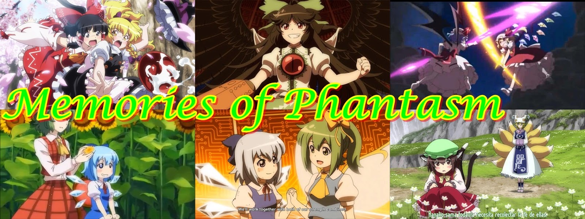

Lista de Episódios:
· Por mais que Touhou não tenha um anime oficial, transimitido por uma emissora japonesa e produzida por um estúdio profissional, a fanbase de Touhou é tão ambiciosa que conseguiram produzir um anime completo englobando todos acontecimentos dos jogos até a época que foi lançado, o mais impressionante é que a qualidade na época (2011) era melhor que muitos estudios grandes e famosos.
- Fantasy Memories of Phantasm 1 ~The Spring Snow Incident~
- Fantasy Memories of Phantasm 2 The Scarlet Mist Incident (Part One)
- Fantasy Memories of Phantasm 3 The Scarlet Mist Incident (Part Two)
- Fantasy Memories of Phantasm 4 The Scarlet Mist Incident (Final Part)
- Fantasy Memories of Phantasm 5 ~The Flower Incident~ (Part One)
- Fantasy Memories of Phantasm 6 ~The Flower Incident~ (Part Two)
- Fantasy Memories of Phantasm 7 ~The Mysterious Giant Youkai~
- Fantasy Memories of Phantasm 8 The Eternal Night Incident (Part One)
- Fantasy Memories of Phantasm 9 The Eternal Night Incident (Part Two)
- Fantasy Memories of Phantasm 10 The Eternal Night Incident (Final Part 1)
- Fantasy Memories of Phantasm 11 The Eternal Night Incident (Final Part 2)
- Fantasy Memories of Phantasm 12 The Courage Test Incident (Part One)
- Fantasy Memories of Phantasm 13 The Courage Test Incident (Part Two)
- Fantasy Memories of Phantasm 14 The Youkai Mountain Battle Incident (Part One)
- Fantasy Memories of Phantasm 15 The Youkai Mountain Battle Incident (Part Two)
All rights belong to Team Shanghai Alice ©